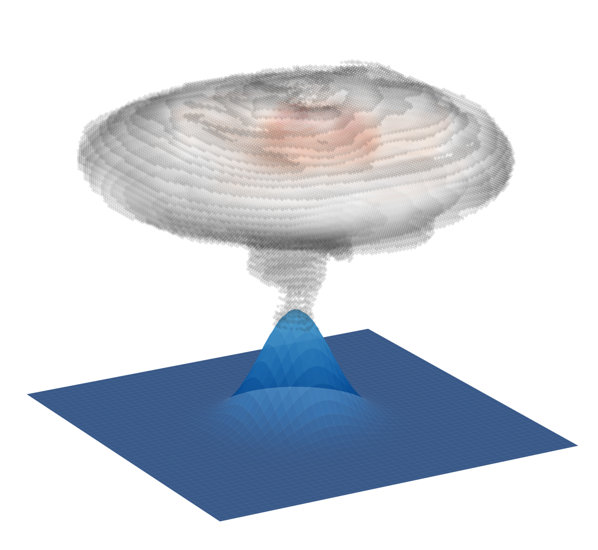

High-resolution numerical study of a hydrothermal plume in a rotating, stratified ocean. Ran CROCO in three dynamical configurations — hydrostatic, non-hydrostatic multigrid (NHMG), and non-Boussinesq (NBQ) — on national HPC infrastructure. Key results include the first 3D rotating confirmation of the Speer & Rona (1989) cold-core anticyclone mechanism and a crossflow regime transition characterised by a source Rossby number scaling.

Feasibility-stage metocean characterisation for an offshore wind development site south of the Isle of Wight. Covers 24-year wind climate, wave climate with model validation against WaveNet buoy data (r = 0.91), tidal harmonic analysis of the complex Solent double-high-water regime, and extreme value analysis (50- and 100-year return periods). Fully reproducible Python pipeline on GitHub.